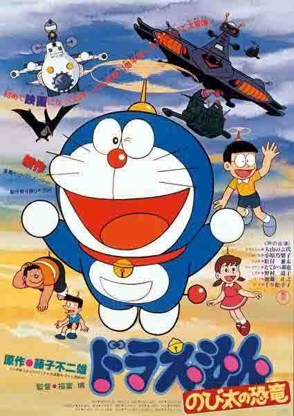
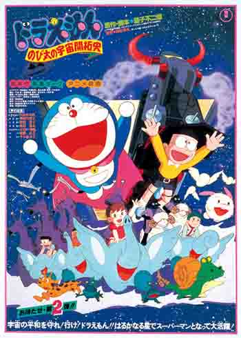
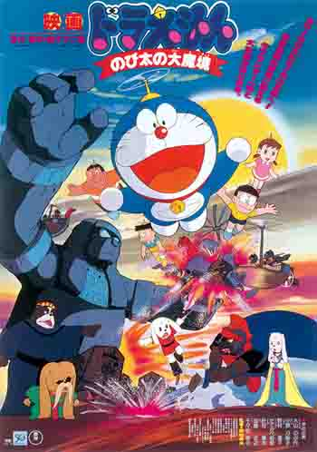
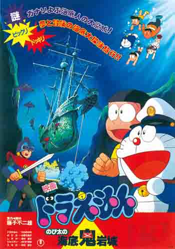
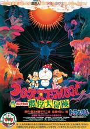
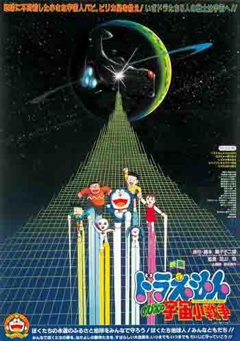
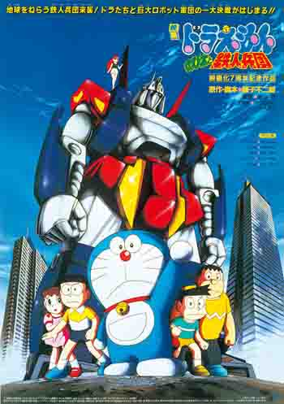
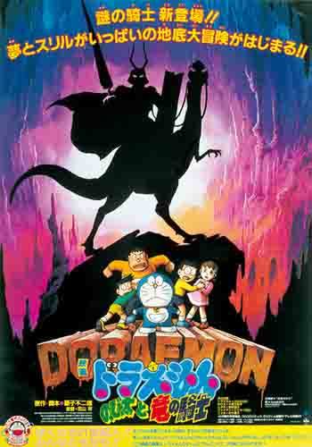
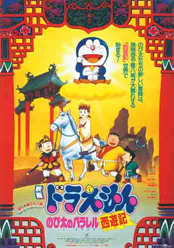
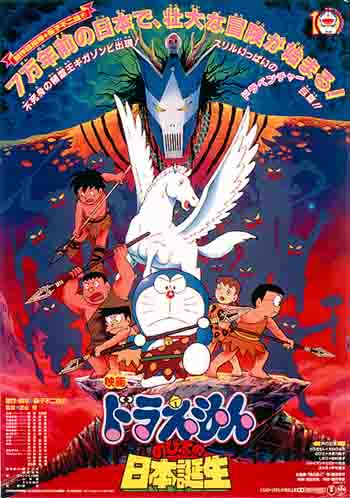

| 1980 大雄的恐龙（のび太の恐竜） | |
 |
作画监督：福富博 编剧： 藤子·F·不二雄 主题曲：在你的衣袋里（ポケットの中に） 故事梗概： 小夫炫耀自己家的暴龙趾骨化石。大雄眼红并信口开河表要找大整架恐龙化石，否则便用鼻子吃意大利粉。后来他在断层附近挖到一枚恐龙蛋的化石，并以时光布还原之后得到一只双叶颈龙，并以叫声将之命名为“皮助”。很快大雄和它成为好朋友，但因它越长越大且被人发现，故大雄决定将他送回白垩纪时代。可是，后来却发现将它错送到上古的北美洲。于是，大雄一行人乘时光机再次回到恐龙时代，但途中被欲抢皮助的神秘人追击，时光机因而故障，使大家必须靠自己沿着古陆块回到日本。 经过长时间的冒险，神秘人物再度出现希望获得皮助，原来是未来的违法恐龙猎人，要获得皮助卖钱，要大雄一行以交出皮助为条件，换取将他们用时光机送回家。大雄最后决定则想办法夺取时光机，但途中被发现而使静香、小夫、胖虎被抓，哆啦A梦和大雄赶往援救却进入陷阱，他们被放在基地中的恐龙竞技场中，恐龙猎人放出暴龙，在可能被吃的千钧一发下，原来该暴龙是吃过桃太郎饭团的恐龙，因此在暴龙的协助下反败为胜，又配合赶到的时光巡逻队打败了恐龙猎人。最后在时光巡逻队的帮助下，皮助被带回它的故乡。 |
| 1981 大雄的宇宙开拓史（のびたの宇宙開拓史） | |
 |
作画监督：西牧秀夫 原作者： 藤子·F·不二雄 主题曲：满怀期冀与激情（心をゆらして） 故事梗概： 罗布鲁在超越时空时发生事故，飞船的门与大雄房间的塌塌米连接在一起。从此旷野星成为大雄的第二游乐场。大雄与罗布鲁们度过了愉快的时光。但是卡尔泰矿业公司为获得矿藏不断威胁星球上居民的安全。最后在大雄与他的伙伴们的帮助下，卡尔泰矿业公司的阴谋被粉碎，而超时光出口也恢复了原状，大雄回到了地球。 |
| 1982 大雄的大魔境 （のび太の大魔境 ） | |
 |
作画监督：西牧秀夫 编剧： 藤子·F·不二雄 主题曲：齐心合力（だからみんなで） 故事梗概： 故事背景设定是现代的非洲一处内地。为了解开当地巨石像的秘密，哆啦Ａ梦一群人展开一段精采的冒险故事。 此作，因剧情设定四次元口袋未随行携出，故登场的道具也极少。众人凭借个人的力量与智慧，挑战不为人知的谜题。 哆啦A梦他们被哼哼王子（扁扁）引导到了非洲的内陆，并开始了魔境的冒险。在那里有一个不可思议的狗王国。哆啦A梦他们踏入了非洲内陆。哼哼王子（扁扁）成为了他们的向导，寻找宝藏的大冒险正式开始。 狗的王国是神秘巨神像所统领的世界。在这个世界，邪恶的大臣为了要征服世界而开发新的兵器。哆啦A梦他们为了拯救王子而不惜一战。 |
| 1983 大雄的海底鬼岩城（のび太の海底鬼岩城） | |
 |
作画监督：芝山努 原作者： 藤子·F·不二雄 主题曲：海和我们（海はぼくらと） 故事梗概： 暑假将到，大家为露营地点的事而争执。大雄和静香想去海滩，胖虎和小夫则想去爬山。最后在哆啦A梦的建议下决定去海底山。去海底露营的大雄等遇到了海底人，并且由于海底火山活动的影响，得知亚特兰提斯预备再次活动的事，如果亚特兰提斯发射鬼角弹，那么全世界都会毁灭，因此为了阻止鬼角弹发射，大雄他们决定去亚特兰提斯的百慕大海域阻止这个阴谋。 |
| 1984 大雄的魔界大冒险（のび太の魔界大冒险） | |
 |
作画监督：芝山努 编剧： 藤子·F·不二雄 主题曲：风的魔术(风のマジカル) 故事梗概： 在现实世界诸事不顺的大雄，抱怨这个世界没有魔法。某天他无意间发现自己跟哆啦A梦的石像，正好奇这些石像的来龙去脉时，憧憬魔法的大雄突发奇想使用“如果电话亭”实现梦想，而石像亦随之消失。有名的魔法研究者－满月博士告知大家一个可怕的消息－魔界星不过多久便会完全接近地球。大雄想变回现实世界，但是如果电话亭己被妈妈扔掉。满月博士解读古文书后被捉走，逃亡的美夜子得大雄等人支持，一起出发至魔界星。在魔界星经历了一番大冒险，其中包括魔界的南极、住着美人鱼及有角鲸鱼的迷惑之海，让人迷路的不归平原，充斥着魔兽的雨林。最后对付大魔王时，根据古文书的记载，只要把银飞镖射进他的心脏里，大魔王就会死去。不过实际却对大魔王毫发未伤，之后大家都被大魔王用法力轰出魔界郊外，轰走的大雄一行人，正想要在晚上反攻时，可是恶魔军团的追兵亦随之追过来，大雄一行人相继被抓到。美夜子为救大雄，不惜牺牲自己当作诱饵，并把古文书交给大雄，让他解读最后有关魔王心脏的内文，大雄亦发誓一定会将她救出来。 最后侥存下来没被抓的只剩下大雄跟哆啦A梦了，就在两人绝望之际，他们灵机一动想出利用时光机挽回的办法去阻止当初他们使用幻想电话亭的念头，但同时大魔王也发现他们的行踪，于是派出魔女梅杜莎追上去，恶魔随着他们进入超空间穿越时空异次元来到了现实世界，并将他们变成石像完成任务。这时，他们才恍然大悟，原来当初那两尊石像就是未来的自己。另一方面，被抓去的美夜子一行人正准备在地球被魔界星吞噬的前个晚上拿来当作活祭要被吃掉。就在大雄与哆啦A梦动弹不得之际，救星多啦美从未来远道而来并利用时光布使他们恢复过来并拿出她自己的幻想电话亭使一切回到现实世界，但事情还没结束，因为魔法世界还在陷入危机中，他们有义务打倒大魔王并将美夜子一行人平安的救出。于是他们利用时光机回到魔界，并得知魔王的心脏不是在其本体内而是藏在外太空中，他们成功将美夜子一行人从地牢中救出，并且决定卷土重来，到外太空与大魔王的恶魔军团决一死战…… |
| 1985 大雄的宇宙小战争（のび太の宇宙小戦争） | |
 |
作画监督：芝山努 编剧： 藤子·F·不二雄 主题曲：少年期(少年期) 故事梗概： 大雄等人意外发现了因为叛军叛乱而从比卡星逃到地球来的总统帕比，并同他成了好朋友。追杀帕比的PCIA战舰出现了，他们捉了静香做人质，最后帕比被捉去了。该星球上的人虽然只有拇指般大小，但是大家的缩小灯被叛军与总统从地球一起带走，大家变不回原样了，大家必须到比卡星夺回缩小灯。“一定要救出帕比！”哆啦A梦他们一同向皮力卡星出发。但是，那里的恐怖独者…… |
| 1986 大雄与铁人兵团 （のび太と鉄人兵団 ） | |
 |
作画监督：芝山努 编剧： 藤子F不二雄、井上和夫、佐多忠仁 主题曲：不可思议的我(わたしが不思议) 故事梗概： 利用任意门到了北极的大雄，无意间发现了机器人的零件，但是因为零件太大，于是就和哆啦A梦将零件拿到镜面世界这个无人的世界里组装。组装完成后，哆啦A梦就将他取名为“圣诞武士”。当正在高兴的操控圣诞武士时，无意间发现他居然着装著毁灭性的导弹…。 大雄在真实世界无意间与自称是机器人主人的莉露露相会，并且借走了可以进入镜面世界的道具。但后来大雄与哆啦A梦居然发现镜面世界居然建立了为了攻击地球的基地！而且指挥者就是莉露露，原来她是由机械理想国所派出来引导铁人兵团到地球的机器人。 为了拯救地球的危机，大雄们决定与铁人兵团一战。由于莉露露受伤被静香所救，并且与莉露露讨论征服地球是个不对的行为。铁人兵团等不及莉露露的联络，也已经大规模的都到了地球，于是大雄他们在镜中的世界开始与铁人兵团作战。莉露露也受到静香的感动，认真思考起他们行为的不妥，于是伙同静香到3万多年以前找当时创造出机械理想国祖先的人类博士，企图改造机械理想国祖先，使其后代机器人不会想要征服地球。 |
| 1987 大雄与龙之骑士 （のび太と竜の骑士 ） | |
 |
作画监督：芝山努 编剧： 藤子F不二雄 主题曲：因为我们是朋友(友达だから) 故事梗概： 故事以大雄与小夫以「恐龙是否完全绝种」进行辩论展开序幕，由于认为恐龙仍然存在的主张遭到小夫以科学而合理的方式完全否定，大雄向哆啦A梦寻求帮助，然而当大雄向哆啦A梦所拿出的道具「OX占卜」询问「"地球上"是否还有恐龙活着」时，却得到了否定的答复。 之后，为了藏匿大雄零分的考卷，大雄与哆啦A梦使用寻找地底空洞的道具意外发现了宽敞的地下空间，并将之建造成众人的游乐场；但在同时，小夫却因接连在河川、自家后院与地下空间接连目击到恐龙而心烦意乱，烦闷的小夫为了了解真相带着摄影机再度进入地底，却失去了踪迹。 大雄与哆啦A梦从小夫失踪前所拍摄的影片得知，地下空间的位置正好位在众人居住城镇河川的下方，于是与胖虎、静香一行人再度潜入，却目击到意外的景象─中生代时代的太古树林塞满了宽广的地底空洞，而理应绝种的恐龙也在出没其中─原来OX占卜虽然正确的回答了问题，但却是依问题的字面意义将搜寻的范围定于「地表」，而掩盖了地表之下有恐龙存在的可能性。 哆啦A梦一行在寻找小夫的途中被地底的野蛮民族河童族捕获，正当生命面临危险时，一名乘龙的骑士即时出现救了大家。骑士自称巴赫，并称是地底人国家的骑士，他告知众人貌似小夫的地上人已经被收容保护，之后并护送众人前往地底人国家的首都与小夫相见，在旅途中哆啦A梦一行得知地底人是由恐龙所演化而来的物种，同时有有高度的文明。 在与小夫重逢后，巴赫同意让一行人安然返回地上世界，不过在地底世界相见的记忆会被消除；但在一个偶然的机会下，大雄却发现地底人正密谋名为「大远征」的行动，其目的竟是要从地上人(人类)手中夺回地表世界! 无法坐视此事发生的哆啦A梦一行，别无无选择的进行了逃亡与对抗... |
| 1988 大雄的平行西游记 （のび太のパラレル西游记） | |
 |
作画监督：芝山努 脚本： 原平随了 主题曲：因为有你(君がいるから) 故事梗概： 为了在新生欢迎会上表演话剧《西游记》，大雄班级举行的话剧的排练。大雄想当孙悟空，可是却只是村人甲。为了证明自己最像孙悟空，大雄用航时机来到中国唐朝，想见孙悟空，而且真的见到了（实际为大雄假扮）。后来大雄以哆啦A梦的道具为赌注，证明孙悟空很像大雄。大雄与他的朋友来到唐朝，却没有见到孙悟空。因此大雄用哆啦A梦的模拟游戏机假扮孙悟空，最后被识破。由于没有关好机器，游戏里的妖怪从游戏机里跑了出来。妖怪最后统治了世界，大雄他们也面临危险。 为了恢复历史，拯救玄奘法师，大雄与他的朋友假扮孙悟空等角色来保护玄奘法师。在穿越火焰山时，被玄奘法师的随从小杨（其实是红孩儿）带入牛魔王和铁扇公主的老巢，面临被煮的命运。这时哆啦美来到的火焰山，加上小杨的协助，最后大雄击败了妖怪。 |
| 1989 大雄与日本诞生（のび太の日本诞生） | |
 |
作画监督：芝山努 编剧:藤子·F·不二雄 主题曲：时之旅人(时の旅人) 故事梗概： 由于在现实生活中太过不顺，加上空地也无法玩耍，大雄和他的伙伴小夫、胖虎和静香决定进行史上最大规模的离家出走。同时，由于发生时空错乱，一名名叫克克鲁的远古时代中国人来到20世纪的东京，后被大雄等发现，带到七万年前。原来克克鲁所在的光明族被黑暗族侵略，而黑暗族的首领是来自未来世界的巨尊比，他妄图改变世界历史，但是在时光巡逻队的协助下，最后巨尊比的阴谋破产，而克克鲁和他的部族来到了日本，成为日本人的始祖。舞台在七万年前的中国。 |